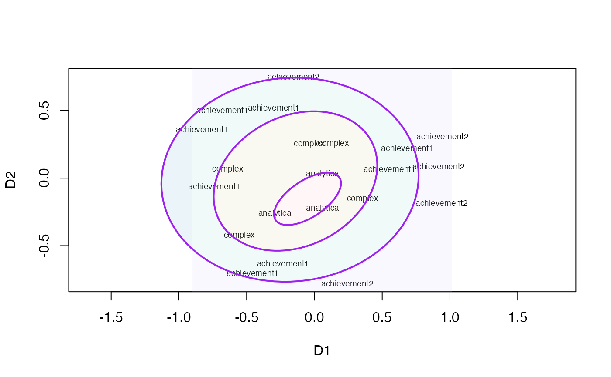

Guttman 1965 Intelligence Data
guttman65mds.RdData contain coordinates for 21 items from a MDS analysis of the original correlation matrix. For each item, the facet assignment is provided. Data are based on the smacof package.
Format
A data frame with 21 observations and 3 variables:
- gfacets
A factor with 4 levels: analytical, complex, achievement1, achievement2
- D1, D2
Coordinates from a 2-dimensional MDS
Examples
plot(guttman65mds[ , 2:3], type = "n", asp = 1)
text(guttman65mds[ , 2:3], labels = guttman65mds$gfacets, cex = 0.6)
# check for radial partitions
ellipses_out <- radialEllipses(crd = guttman65mds[ , 2:3],
group = guttman65mds$gfacets, fill = TRUE, add = TRUE)
